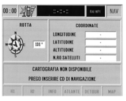

|
Check the operation of the satellite navigation system
 The satellite reception test should be carried out in an open area. In this case, without a comparison it is impossible to say whether or not the navigator is defective. If, on the other hand, the comparison reveals even worse reception, check the connection of the satellite aerial, the electrical continuity, the correct power supply and, if necessary, test with different equipment that is definitely working properly. For the road test:
Irregular instructions: before or after junctions, arrow out of position, they may be due to CD maps that are not up to date: a missing instruction stems from the fact that a road is not on the map because it has not been processed in digital form or the road network has been changed compared with the one on the map. The navigator calculates the position of the vehicle both by means of the satellite signal and using the wheel rpm and the internal gyroscope bush signal. Problems of accuracy may arise when:
Occasions when the navigation system should be initialised:
To initialize the navigator it is necessary to drive about 100 km in optimum satellite reception conditions. If all the tests have not highlighted defects then the problem lies in the Connect which should be replaced. |